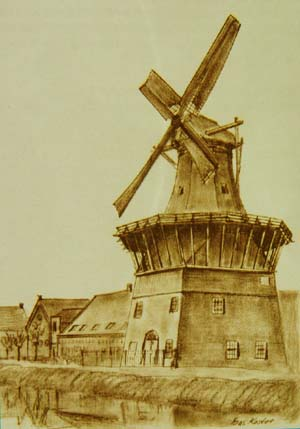
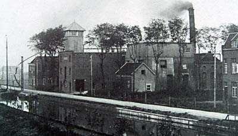
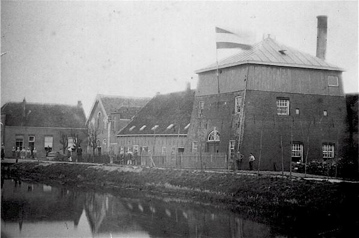
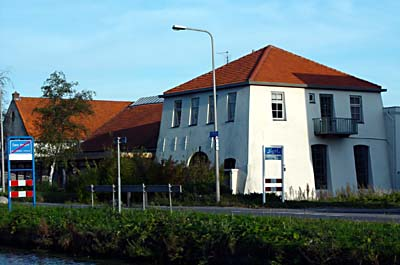
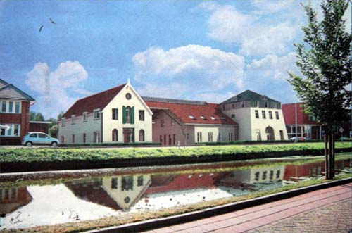

Delft verdwenen molens

Delft verdwenen molens

 De Bieslandse molen (Met dank aan Hans Roest) |
 Bieslandse molen aan de Noordeindseweg (Met dank aan Hans Roest) |
 Bieslandse molen |

De Bieslandse molen 1900 |
 de Bieslandse molen c.a.1900 |
 De Bieslandse molenstomp 1979 |
 De Bieslandse molen Noordeindseweg Delfgauw |
 De Bieslandse molen. Noordeindseweg Delfgauw |
 De Bieslandse molen 1900 |
 De Bieslandse molen Noordeindseweg Delfgauw. |
 de Bieslandse molen. |
|
 De Gekroonde Zalm |
|
 De Gekroonde Zalm |
 De Groenmolen 1 |
 De Groenmolen 2 |
 De Groenmolen 3 |
 De Groenmolen 4 |
 De Groenmolen 5 |
 De Groenmolen 6 |
 De Groenmolen 7 |
 De Groenmolen 8 |
 De Groenmolen 9 |
 De Groenmolen 10 |
 De Groenmolen 11 |
 De Groenmolen 12 |
 De Groenmolen 13 |
 De Groenmolen 14 |
 De Groenmolen 1902 |
|
Groenmolen 15. |
 De Groenmolen |
 Hollandsche Tuynmolen en Pauwmolen c.a. 1760 |
|
 De Oranjeboom |
 De Papegaay 1 |
 De Papegaay 2 |
 De Papegaay 3 |
 De Papegaay 4 |
 De Papegaay 5 |
 De Papegaay 6 |
 De
Papegaay 7 De
Papegaay 7 |
 De Papegaai tijdens de sloop. |
 De gevelsteen nog bestaand. |
 De Papegaay 8 |
 de Papegaay 9 |
 de Papegaai |
|
 De Pauwmolen 1 |
 De Pauwmolen 2 |
 De Pauwmolen 3 |
|
 Het Fortuin 1911 |
|
 Het Fortuin 1916 |
 Het Fortuin 1 |
 Het Fortuin 2 |
 Het Fortuin in het openluchtmuseum. |
 Het Fortuin 1890 |
 Het Fortuin 5 |
.jpg) Het Fortuin 6 |
 Het Fortuin 7 |
.jpg) Het Fortuin 8 |
.jpg) Het Fortuin 9 |
 Het Fortuin 1824 |
 Het Fortuin 1890 |
 Molenromp aan de tweemolentjes vaart 1900 |
 Molenromp aan de tweemolentjes vaart 1935 |
 Molenromp aan de tweemolentjes vaart 1936 Dit is de molenromp van de NIEUWE NOOTDORPSE MOLEN en stond bekend als de theeschenkerij HET RIETENDAK. De romp van 1900 en 1935 is ook de romp van de NIEUWE NOOTDORPSE MOLEN welke in 1650 is gebouwd en in 1892 buitengebruik werd gesteld. Na onttakeld te zijn stond deze molenromp in de volksmond bekend onder de naam: HET ZINKENDAK welke in 1936 tot theeschenkerij werd omgebouwd. De verbouwing bestond ondermeer door het vervangen van het ZINKENDAK door een RIETENDAK vandaar de naam theeschenkerij HET RIETENDAK. Helaas brandde in de nacht van 10 december 1989 de theeschenkerij geheel uit. In de winter van 1993 werd begonnen met de bouw van een moderne theeschenkerijop de plaats waar eens de NIEUWE NOOTDORPSE MOLEN stond. Informatie van Teun van der Sloot. |
 Oude Laansche molen 1907 |
 Oude Laansche molenstomp |
 Trasoliemolen de Jonge Jacob 1880 |
|
 Oliemolen Mercurius |
 Mercurius |
|
 Mercurius 1900 |
 Mercurius |
 Mercurius |
 Mercurius |
 Mercurius |
 Mercurius 2002 |
|
 Mercurius |
|
 Deze pagina is gemaakt op 25-12-2006: Tijd: 15:29 uur.
Deze pagina is gemaakt op 25-12-2006: Tijd: 15:29 uur.

Laatste wijziging:7-12-2014 tijd 14:30 uur
Met dank aan: de
Hollandsche molen/Rob Pols/Hans Klok/Gerard Barendse/
Erwin Esselink/Teun van der Sloot/Hans Roest/Garrit
Hendriks voor het gebruik van de foto's